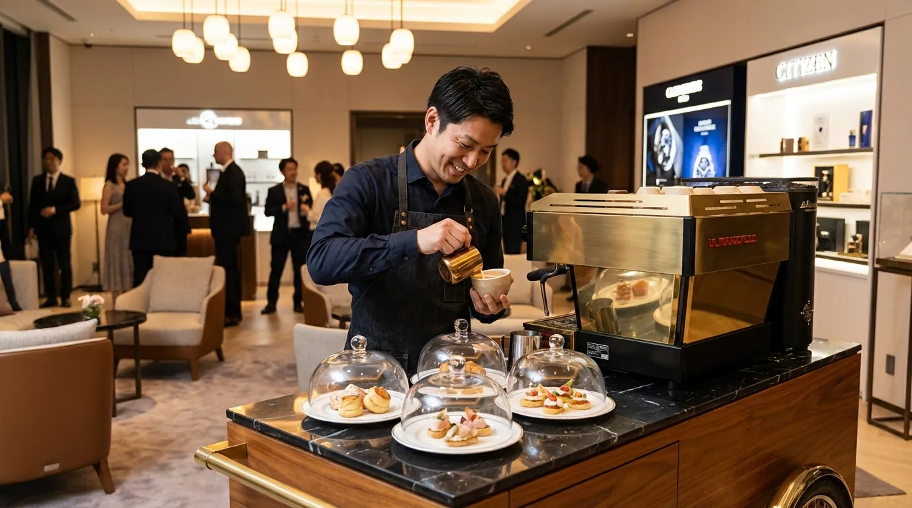

PROFILE
一杯の質に責任を持つ、
バリスタが運営しています。
KIN BREW STAND は、カフェ現場で10年以上抽出に向き合ってきたバリスタが立ち上げた出張コーヒーサービスです。機材・豆・接客のすべてに、現場で培った判断基準を反映しています。

HEAD BARISTA
佐藤 健一
Kenichi Sato / Head Barista & Founder
大学在学中にスペシャルティコーヒーに出会い、卒業後は都内のロースタリーカフェで5年間バリスタとして勤務。日々の抽出を通じて、豆の個性をどう一杯に落とし込むかを学びました。
その後、複数の店舗立ち上げに関わり、メニュー開発・スタッフ教育・機材選定までを担当。2024年に独立し、出張コーヒー・バリスタ派遣に特化した KIN BREW STAND を立ち上げました。
大切にしているのは「会場に立つ前から準備が9割」という考え方。電源容量、水場、導線、ピーク時間、ゲスト層を事前に整理することで、当日の一杯目から安定した品質で提供できると考えています。
CAREER & CREDENTIALS
経歴と保有資格
2013 - 2018
都内ロースタリーカフェにてバリスタ勤務
日々の抽出、メニュー開発、新人スタッフ教育を担当。週末は1日200杯以上を抽出する繁忙店舗で経験を積みました。
2018 - 2023
複数店舗の立ち上げ・運営マネジメント
都内および郊外のカフェ立ち上げに従事。豆の選定、機材導入、オペレーション設計、スタッフ研修を担当しました。
2024 -
KIN BREW STAND 設立
出張コーヒー・バリスタ派遣・コーヒーケータリングに特化したサービスとして独立。関東を中心に、展示会、企業イベント、結婚式、ラテアート出張に対応しています。
QUALIFICATIONS
CERTIFICATION
JBA バリスタライセンス レベル1
CERTIFICATION
SCAJ コーヒーマイスター
CERTIFICATION
食品衛生責任者
AWARD
ラテアート大会 出場経歴あり
EQUIPMENT
使用機材へのこだわり
出張現場でも店舗品質を再現するため、可搬性と抽出精度の両立する業務用機材を採用しています。
ESPRESSO MACHINE
業務用エスプレッソマシン
出張現場用に最適化した可搬性の高い業務用エスプレッソマシンを使用。安定した抽出温度と圧力で、店舗と同等の一杯を提供します。
GRINDER
業務用グラインダー
フラットバー搭載の業務用グラインダーで、粒度のばらつきを最小化。豆の個性を引き出します。
MILK STEAMER
スチームピッチャー・温度管理
複数サイズのピッチャーを用意し、提供杯数に応じて使い分け。ラテアートに最適なミルクテクスチャを安定的に作ります。
PORTABLE SETUP
出張用什器一式
折りたたみ式カウンター、給水・排水タンク、電源延長設備を保有。会場の電源容量・水場有無に合わせた構成で出張します。
BEANS
使用豆と仕入れ先
使用する豆は、信頼するロースターからイベントごとに最適なものを選定しています。一般的なブレンドではなく、当日のメニュー・気温・提供スピードを踏まえて選ぶことで、ゲストの記憶に残る一杯を目指しています。
結婚式や少人数の上質なイベントには浅煎り〜中煎りのシングルオリジン、展示会や大規模懇親会には抽出効率と万人受けを両立するブレンドを採用するなど、シーンに応じて切り替えます。
ご希望があれば、企業ブランドに合わせたオリジナルブレンドの開発もご相談いただけます。
PHILOSOPHY
サービスに込める考え
01. PREPARATION
準備で9割が決まる
電源、水場、導線、ピーク時間、ゲスト層を事前に整理し、現場で迷わないオペレーションを設計します。
02. QUALITY
店舗品質を出張先で
業務用機材と精度の高い抽出オペレーションで、出張先でも店舗と同じ一杯を再現します。
03. COMMUNICATION
体験としてのコーヒー
注文から提供までのやり取りも体験の一部。バリスタの言葉と一杯で、イベントの記憶を深めます。
運営者と直接話して
イベントを設計しませんか。
日程、会場、想定人数が未定でも構いません。決まっている範囲でお送りください。バリスタが直接ヒアリングし、最適な提供方法をご提案します。
無料で見積もり相談するSERVICES
提供しているサービス
TOKYO BARISTA
東京のバリスタ派遣
展示会、ホテル、オフィス懇親会まで、東京開催の会場条件に合わせて派遣します。
TOKYO CATERING
東京のコーヒーケータリング
機材込みで会場に出張し、ドリンク提供と運営をまとめて引き受けます。
EXHIBITION
展示会のコーヒー出張
ブース集客や商談導線のためのコーヒー体験を設計します。
CORPORATE EVENT
企業イベントのバリスタ派遣
懇親会、周年、採用、表彰式に、ゲスト満足度を高める一杯を。
WEDDING
結婚式のコーヒー出張
披露宴、二次会、少人数ウェディングに、記憶に残る一杯を提供。
LATTE ART
ラテアート出張
目の前で描くラテアートやロゴラテで、写真映えする体験をつくります。